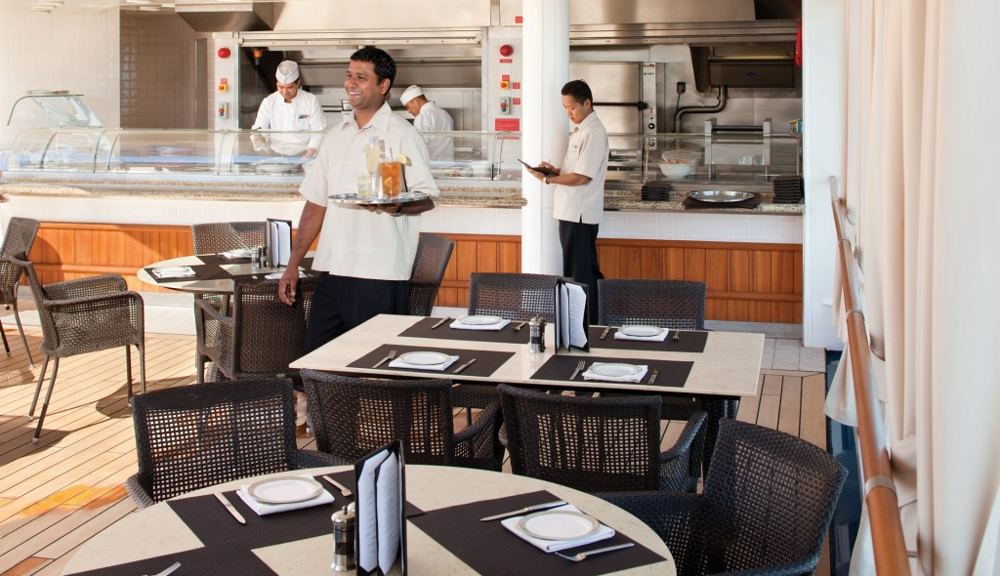
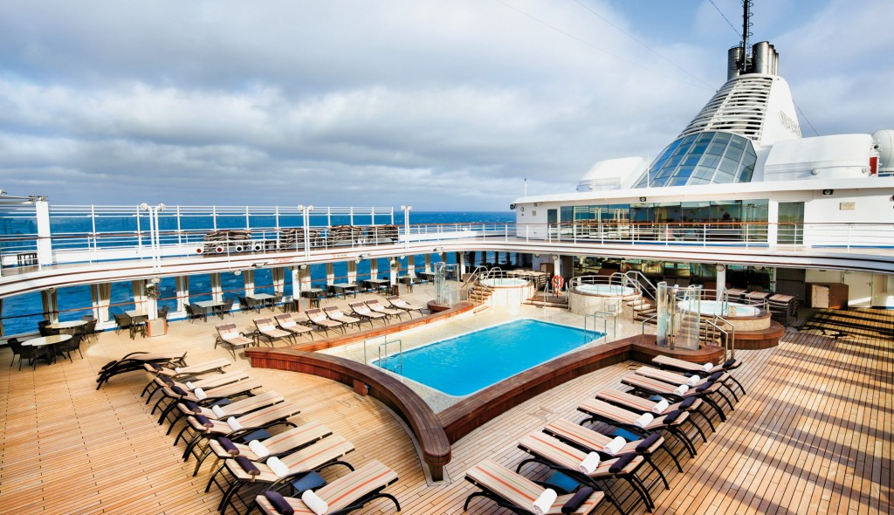
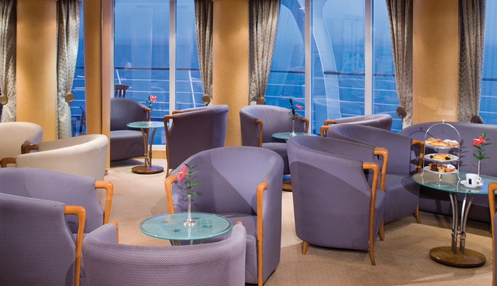
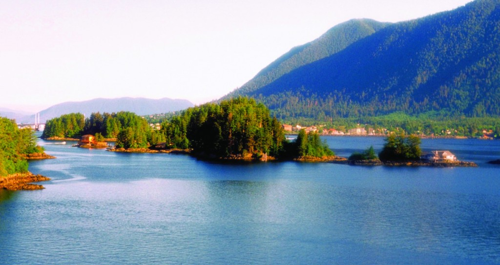

ALASKA TO VANCOUVER CRUISE AND STAY
Sailing onboard The Silver Sea
A cruise aboard the The Silver Sea offers you a chance to let your hair down, kick back and truly relax. Visit the Spa for some treatments ranging from the traditional to the exotic or bathe in both sun and water at the Pool. This cruise allows you to peruse original paintings by well-known artists in the onboard Art Gallery and purchase any that catch your eye. If you feel like keeping active then visit the fitness centre. Dining options are plentiful aboard the The Silver Sea with everything from steaks and seafood at the East Meets West Steakhouse to tapas from around the world at Pool Bar and Restaurant and lots more in between. And after a hard day of relaxation and fun enjoy a drink at the Panorama Lounge, where you can watch sky and sea change colours as the sun sets.
The Spa

Pool Bar
The Restaurant

Pool Deck
Fitness Centre
Panorama Lounge
Day 1 - Seward (Anchorage), AK, United States of America
It is hard to believe that a place as beautiful as Seward exists. Surrounded on all sides by Kenai Fjords National Park, Chugach National Forest, and Resurrection Bay, Seward offers all the quaint realities of a small railroad town with the bonus of jaw-dropping scenery. This little town of fewer than 3,000 citizens was founded in 1903, when survey crews arrived at the ice-free port and began planning a railroad to the Interior. Since its inception, Seward has relied heavily on tourism and commercial fishing. It is also the launching point for excursions into Kenai Fjords National Park, where it is quite common to see marine life and calving glaciers.
Day 2 - Cruise Hubbard Glacier, U.S.A., United States of America

Day 3 - Sitka, Alaska, United States of America
It's hard not to like Sitka, with its eclectic blend of Alaska Native, Russian, and American history and its dramatic and beautiful open-ocean setting. This is one of the best Inside Passage towns to explore on foot, with such sights as St. Michael's Cathedral, Sheldon Jackson Museum, Castle Hill, Sitka National Historical Park, and the Alaska Raptor Center topping the town's must-see list. Sitka was home to the Kiksádi clan of the Tlingit people for centuries prior to the 18th-century arrival of the Russians under the direction of territorial governor Alexander Baranof, who believed the region was ideal for the fur trade.
Day 4 - Juneau, Alaska, United States of America
Juneau, Alaska's capital and third-largest city, is on the North American mainland but can't be reached by road. The city owes its origins to two colorful sourdoughs (Alaskan pioneers)-Joe Juneau and Richard Harris-and to a Tlingit chief named Kowee, who led the two men to rich reserves of gold at Snow Slide Gulch, t he drainage of Gold Creek around which the town was eventually built. That was in 1880, and shortly thereafter a modest stampede resulted in the formation of a mining camp, which quickly grew to become the Alaska district government capital in 1906.
Day 5 - Skagway, Alaska, United States of America
Located at the northern terminus of the Inside Passage, Skagway is a one-hour ferry ride from Haines. By road, however, the distance is 359 miles, as you have to take the Haines Highway up to Haines Junction, Yukon, then take the Alaska Highway 100 miles south to Whitehorse, and then drive a final 100 miles south on the Klondike Highway to Skagway. North-country folk call this sightseeing route the Golden Horseshoe or Golden Circle tour, because it passes a lot of gold-rush country in addition to spectacular lake, forest, and mountain scenery. The town is an amazingly preserved artifact from North America's biggest, most-storied gold rush.
Day 6 - Ketchikan, Alaska, United States of America
Ketchikan is famous for its colorful totem poles, rainy skies, steep-as-San Francisco streets, and lush island setting. Some 13,500 people call the town home, and, in the summer, cruise ships crowd the shoreline, floatplanes depart noisily for Misty Fiords National Monument, and salmon-laden commercial fishing boats motor through Tongass Narrows. In the last decade Ketchikan's rowdy, blue-collar heritage of logging and fishing has been softened by the loss of many timber-industry jobs and the dramatic rise of cruise-ship tourism. With some effort, though, visitors can still glimpse the rugged frontier spirit that once permeated this hardscrabble cannery town.
Day 7 - Cruise Inside Passage, U.S.A, United States of America
Day 8 - Vancouver, Canada

Consistently ranked as one of the world's most livable cities, Vancouver lures visitors with its abundance of natural beauty, multicultural vitality, and cosmopolitan flair. The attraction is as much in the range of food choices-the fresh seafood and local produce are some of North America's best-as it is in the museums, shopping opportunities, and beaches, parks, and gardens. Indeed, the Vancouver package is a delicious juxtaposition of urban sophistication and on-your-doorstep wilderness adventure.
Included in this cruise
Spacious suites - over 85% with private verandas Personalised service - nearly one crew member for every guest Butler service in every suite - all guests are pampered equally Open-seating dining options - dine when and with whomever you please Diversity of dining venues - casual, romantic, regional delicacies, and gourmet cuisine inspired by Relais and Châteaux Beverages in-suite and throughout the ship - select wines, premium spirits, specialty coffees and soft drinks, plus your own tailored mini-bar In-suite dining and 24-hour room service - always complimentary, always available Sophisticated entertainment from live music to production shows Enrichment lecturers, acclaimed chefs and destination consultants Complimentary transportation into town in most ports Gratuities always included in your fare Free WiFi throughout the ship; unlimited in select suite categories
Prices from EURO 3250pp
Departure Dates and Sailings - 7 Night Seward to Glacier Bay Vancouver departing selected dates May-Sep 2016.